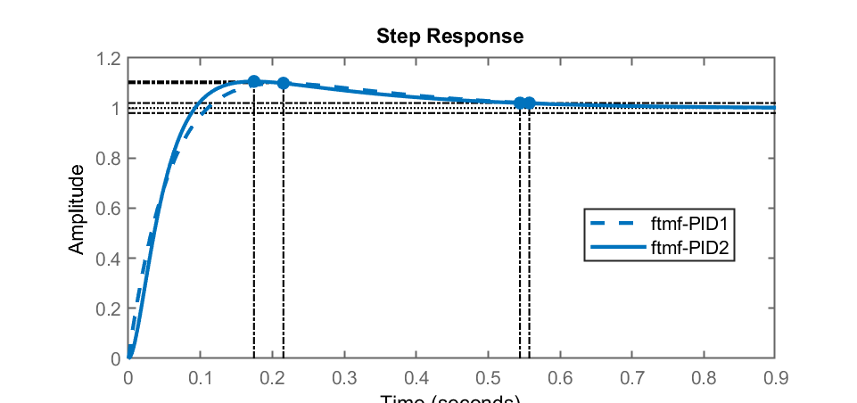

Objetivo: a ideia desta aula é recapitular detalhes importantes sobre o controlador PID analógico, adotar algum método de sintonia e simular o método e o PID sobre uma planta hipotética.
Controladores PID (Proporcional + Integral + Derivativo) são amplamente adotados na indústria. Sua função de transferência no formatpo bastante didático é:
Sua transformada de Laplace leva à:
ou ainda:
onde:
O procedimento de seleção dos parâmetros do controlador PID de modo a serem atendidas as especificações de desempenho é conhecido como “sintonia do controlador”. Nichols e Ziegler (em 1942) propuseram regras práticas para sintonia de controladores PID, baseados na resposta experimental da planta à ser controlada.
Referência:
Este método é aplicado quando a planta não envolve integradores nem polos complexos conjugados dominantes, ou seja, sua resposta é do tipo super-amortecida ou criticamente amortecida. Nestes casos, o sistema responde de forma similar a um simples sistema de 1a-ordem com exceção da curvatura existente no início da resposta. Algo como:
Neste tipo de resposta, alguns parâmetros importantes nos interessam:

Nos interessam: o tempo de atraso,
Baseado nestes valores, Ziegler e Nichols sugerem a seguinte tabela para sintonia de um PID:
| P | 0 | ||
| PI | 0 | ||
| PID |
Desta forma, o PID fica:
Neste segundo método, fecha-se a malha com um simples ganho proporcional (mesmo se já houver um PID no sistema, basta “reseter” as ações de contorle integral e derivativas) e neste caso, se varia o ganho do controlador até que o sistema propositalmente entre em oscilação. Neste caso, a idéiua é posicionar os pólos complexos dominantes de malha-fechada, propostitalmente sobre o eixo
No caso de um PID, se ajusta seus valores para:

Onde
Neste caso, Ziegler-Nichols sugerem outra combinação de valores para sintonia de um PID:
| Controlador | |||
|---|---|---|---|
| P | 0 | ||
| PI | 0 | ||
| PID |
ou:
| Controlador | |||
|---|---|---|---|
| P | 0 | 0 | |
| PI | 0 | ||
| PID |
Obs.: outras tabelas para ajuste dos parâmetros do PID baseados no método de Ziegler-Nichols podem ser facilmente encontradas. Por exemplo, a página Wiki em português (menos completa) ou página Wiki em inglês (mais completa). O detalhe é que é comum que os valores sugeridos por Zieglher-Nichols levem à overshoots iniciais da ordem de 50%. Motivo pelo qual, outros autores, sugerem diferentes valores para ajuste inicial dos parâmetros do PID:
| Controlador | |||||
|---|---|---|---|---|---|
| P | – | – | – | – | |
| PI | – | ||||
| PD | – | – | |||
| PID clássico | |||||
| Regra Integrador de Pessen | |||||
| Algum overshoot | |||||
| Sem overshoot |
Tabela originalmente diponível em: https://en.wikipedia.org/wiki/Ziegler%E2%80%93Nichols_method (em 13/10/2022).
Neste caso, se fecha a malha do sistema com um simples controlador proporcional e se programa seu chaveamento entre 2 valores (o que seria on “on”/“off”) conforme o erro seja positivo ou negativo. Este tipo de controlador também é conhecido como controlador “bang-bang“.

De forma mais simples, sua lei de controle fica como:
ou seja, o sinal de controle
Aplicar este tipo de sinal de controle à um sistema, o levará uma oscilação. A ideia aqui é justamente se capturar o período desta oscilação, que coincide justamente com
onde:
De posse de
Mas… na prática o PID pode não ser usado exatamente deste forma. Ocorrem 2 problemas na utilização do PID neste formato (simples):
O problema da susceptibilidade do PID para com informações ruidosas provenientes de uma planta pode ser solucionado com o uso proposital de um filtro derivativo.
Se analisamos o diagrama de Bode da ação Derivativa pura de um PID percebemos o seguinte diagrama:

Analisando-se melhor a figura acima, percebemos, pelo diagrama de magnitude, que o ganho de uma ação derivativa pura só aumenta à taxa de 20 db/década, sem limite e conforme a frequência aumenta, o que na prática significa que componentes (sinal de erro) de alta frequência, serão amplificados. O que pode deixar o sinal de atuação (saída) do PID muito oscilatório (ruidoso).
Uma forma simples de atenuar este comportamento é limitar o ganho para frequências elevadas. A equação do PID passa à ser:
Note pela expressão anterior, que a ação derivativa incorpora agora um filtro, ou seja:
onde
Suponha que
ou seja, um sistema com:
O diagrama de bode desta última expressão rende:

Ou seja, analisando-se o diagrama de magnitude, ser percebe que agora o ganho é limitado em altas frequências ao valor de
Comparando o Diagrama de Bode de um PID com ação derivativa pura e outro com ação derivativa filtrada, teremos algo como:
Note que o bloco “PID” disponibilizado pelo Matlab/Simulink já incorpora a ação derivativa com filtragem:

A idéia agora é testar estas abordagens e sintonizar um PID para certa planta.
A seguinte planta será adotada para testar o PID:
Ingressando com a mesma no Matlab:
>> G=tf( 20, poly([-1 -2]) )
G =
10
-------------------
0.5 s^2 + 1.5 s + 1
Continuous-time transfer function.
>> zpk(G) % conferindo...
ans =
20
-----------
(s+2) (s+1)
Continuous-time zero/pole/gain model.
>> dcgain(G) % ganho DC da planta
ans =
10
Note que esta planta apresenta um ganho DC não nulo, isto é, ser for injetado um degrau unitário na sua entrada, sua saída vai tender para
A próxima figura mostra o comportamento da planta quando se aplica um degrau unitário entrada da planta (em malha-aberta):

Pode-se capturar os seguintes valores desta resposta:
Procedendo com a simulação do PID para este caso:
>> % Extraíndo dados do gráfico
>> L=0.3; T=1.7;
>> Kc=1.2*T/L; Ti=2*L; Td=0.5*L;
>> Ki=Kc/Ti; Kd=Kc*Td;
>> % Listando [Kc Ki Kd]:
>> [Kc Ki Kd]
ans =
6.8 11.333 1.02
>>
A equação final do PID com filtro derivativo, considerando
Ingressando no Matlab:
>> s=tf('s');
>> PID2=6.8+11.3333/s+1.02*(100/(1+(100/s)))
PID2 =
108.8 s^2 + 691.3 s + 1133
--------------------------
s^2 + 100 s
Continuous-time transfer function.
>> zpk(PID2)
ans =
108.8 (s^2 + 6.354s + 10.42)
----------------------------
s (s+100)
Continuous-time zero/pole/gain model.
>> zero(PID2)
ans =
-3.1771 + 0.56814i
-3.1771 - 0.56814i
>> pole(PID2)
ans =
0
-100
>>
Note o segundo polo corresponde a frequência de corte do filtro derivativo.
Um PID com ação derivativa pura fica:
>> PID1=6.8+11.3333/s+1.02*s
PID1 =
1.02 s^2 + 6.8 s + 11.33
------------------------
s
Continuous-time transfer function.
>> zpk(PID1)
ans =
1.02 (s+3.339) (s+3.328)
------------------------
s
Continuous-time zero/pole/gain model.
>> zero(PID1)
ans =
-3.339
-3.3276
>> pole(PID1)
ans =
0
>>
Neste caso, notamos apenas um polo na origem que corresponde à ação integrativa pura.
Podemos levantar um diagrama de Bode comparando o impacto destes PIDs no sistema:
>> % Cálculos para primeiro PID (ação derivativa pura)
>> ftma_PID1=PID1*G;
>> zpk(ftma_PID1)
ans =
20.4 (s+3.339) (s+3.328)
------------------------
s (s+2) (s+1)
>>
>> % Cálculos para segundo PID (ação derivativa filtrada)
>> ftma_PID2=PID2*G;
>> zpk(ftma_PID2)
ans =
2176 (s^2 + 6.354s + 10.42)
---------------------------
s (s+100) (s+2) (s+1)
Continuous-time zero/pole/gain model.
>> figure; bode (G, PID1, PID2, ftma_PID)
O último comando vai render a seguinte figura:

Podemos agora fechar a malha para os PIDs:
>> ftmf_PID1=feedback(ftma_PID1,1);
>> ftmf_PID2=feedback(ftma_PID2,1);
>> figure; step(ftmf_PID1, ftmf_PID2)
Obtemos a seguinte resposta para a planta com os PIDs:

Esta planta também poderia ser simulada usando-se o Simulink:

Onde a planta foi ingressada na forma de: Biblioteca do Simulink>>Continuos>>Zero-Pole:

| Parâmetro | Tempo de subida | Overshoot | Tempo de assentamento | Erro regime permanente | Estabilidade |
|---|---|---|---|---|---|
| Diminui | Aumenta | Pequena mudança | Diminui | Degrada | |
| Diminui | Aumenta | Aumenta | Eliminado | Degrada | |
| Pequena alteração | Diminui | Diminui | Sem efeito | Melhora se |
Existe uma simulação de comportamento de sistema conforme se variam os parâmetros de um PID que pode ser vista na página Wiki sobre PID (em inglês):
Obs.: para realizar o item (3) sugere-se o seguinte diagrama de blocos no Simulink:
Fim.
Você pode tentar usar o seguinte comando para gerar figuras .png à partir dos diagramas de blocos gerados via Simulinl:
>> % gerar imagem PNG à partir de "aula1_a.slx"
>> print('-saula1_a', '-dpng', '-r200', 'aula1_a.slx.png')
>> print('-saula1_a', '-djpeg', '-r150', 'aula1_a.slx.jpg')
Prof. Fernando Passold, em 13/10/2022